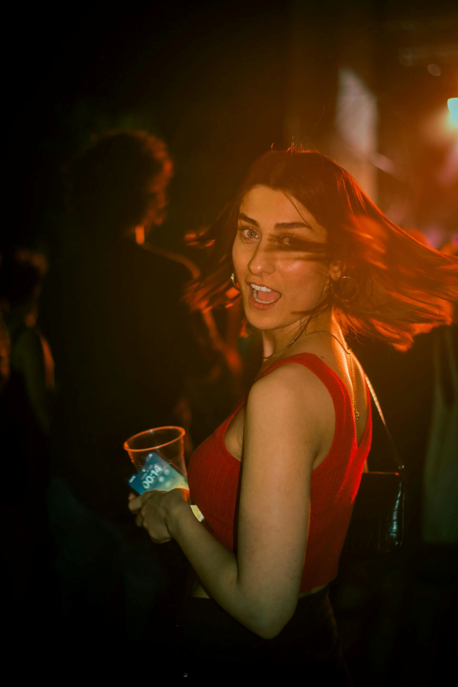
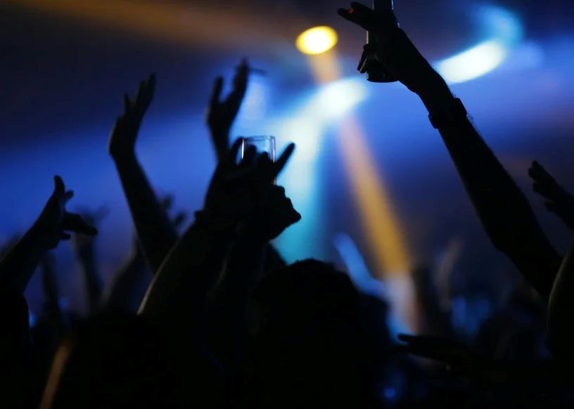

Bars om 02:00 al dicht?
Wat je vaak hoort of leest: de bars in Barstreet zijn geopend tot 02.00 uur. Dit geldt zeker niet voor de Barstreet van Kos-stad.
Nee – in hoogseizoen gaat het door tot diep in de ochtend.

Wat je vaak hoort of leest: de bars in Barstreet zijn geopend tot 02.00 uur. Dit geldt zeker niet voor de Barstreet van Kos-stad.

Sommige bars en clubs zijn in het hoogseizoen open tot 08:00 / 8:00 am in de ochtend – en in het weekend soms nog langer.
No – in high season it runs deep into the morning.
What you often hear or read: the bars on Bar Street are open until 2:00 am. That is definitely not true for Bar Street in Kos Town.
Some bars and clubs in high season stay open until 08:00 / 8:00 am – and at weekends sometimes even longer.
Nein – in der Hochsaison geht’s bis tief in den Morgen.
Oft liest man, die Bars in der Bar Street seien bis 2 Uhr offen. Das gilt nicht für die Bar Street in Kos-Stadt.
Manche Bars und Clubs haben in der Hochsaison bis 08:00 / 8:00 am geöffnet – am Wochenende manchmal noch länger.
No – in alta stagione si va fino a tarda mattina.
Si sente spesso che i bar di Bar Street chiudono alle 2. Non è vero per Bar Street a Kos Town.
Alcuni bar e club in alta stagione restano aperti fino alle 08:00 / 8:00 am – e nel weekend a volte anche di più.
Hayır – yüksek sezonda sabaha kadar sürer.
Sıkça duyulan: Bar Street barları 02:00’ye kadar açık. Bu, Kos Town Bar Street için geçerli değil.
Bazı bar ve kulüpler yüksek sezonda 08:00 / 8:00 am’e kadar açık – hafta sonu bazen daha da uzun.
No – en temporada alta sigue hasta la madrugada.
Se oye a menudo que los bares de Bar Street cierran a las 2. Eso no es cierto para Bar Street en Kos Town.
Algunos bares y clubs en temporada alta están abiertos hasta las 08:00 / 8:00 am – y el fin de semana a veces más.